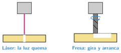

Corte láser y fresado CNC
🤔 Pienso5 min
Qué hago aquí: Piensa un momento y contesta con lo que ya sabes. No pasa nada si no lo sabes: es para empezar.
Quieres cortar la silueta de un coche en madera. ¿Qué herramienta usarías? ¿Te saldría exacta?
📖 Leo y aprendo15 min
Qué hago aquí: Lee despacio, mira los dibujos y los ejemplos, y quédate con la idea clave del final.
Hay más máquinas de fabricación digital. Todas siguen la misma idea: un ordenador mueve una herramienta.

- Láser: un rayo de luz quema el material. Con poca fuerza graba dibujos. Con más fuerza corta. Usa dibujos planos (SVG).
- Fresado: una fresa gira muy deprisa y arranca material. Puede tallar relieves en madera o plástico.
| Impresora 3D | Láser | Fresa | |
|---|---|---|---|
| Cómo trabaja | Añade capas | Quema | Arranca |
| Archivo | STL | SVG | SVG o STL |
| Para hacer | Piezas con volumen | Siluetas y grabados | Relieves |
✏️ Hago25 min
Qué hago aquí: Haz las actividades en orden. Empieza siempre por las básicas.
Completa: con poca fuerza, el láser . Con mucha fuerza, .
¿Qué máquina usarías? Escribe: impresora, láser o fresa.
- Un llavero de madera con tu nombre grabado:
- Una rueda dentada de plástico:
- Un cartel con letras en relieve:
Une cada máquina con su archivo.
| Impresora 3D • | • SVG |
| Láser • | • STL |
Exporta en SVG la placa con tu nombre de la UD11. Ábrela en Snapmaker Luban con el láser. ¿Cuánto tiempo calcula?
La Snapmaker es un sistema de control. Escribe su entrada, su controlador y su salida cuando trabaja con el láser.
✏️ Puedes responder escribiendo, con un dibujo o un esquema, o contándolo en voz alta.
🚀 Amplío (si quieres saber más)
Qué hago aquí: ¿Has terminado? Lee la curiosidad o elige el reto. Es voluntario.
El láser quema una línea de 0,2 mm de ancho. Cortas un cuadrado de 50 mm por el centro de la línea. ¿Cuánto medirá la pieza? ¿Cómo lo corregirías?
✅ Compruebo5 min
Qué hago aquí: Contesta sin mirar la ficha y marca cómo lo llevas.